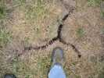
Pouh, quel festival : 200 photos j'ai pris, l'a fallu que j'en jette pas mal ! Bon, en arrivant, on voit que la terre a soif...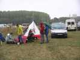
Mais pas d'inquiétude, avec ce qu'il tombe, ça devrait se reboucher assez vite ! Turbulences finit de monter sa tente sous parapluies et anoraks...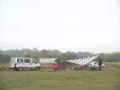
Et les italiens ont fini, mais leur velum ne m'a pas semblé très imperméable ni à l'abri des embruns ! Heureusement (pour ça...) le vent est pratiquement nul.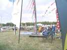
Mais enfin, petit à petit, ça se lève, le vent monte et les cervolistes plantent leurs guitounes pour tenir la journée...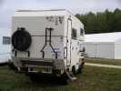
Les Mouchague ont un peu traîné, mais ont fini par arriver...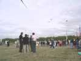
Le principe du festival est de mélanger le public et les cerfs-volistes ! C'est agréable, ça facilite les contacts, les questions se posent plus facilement et les discussions vont bon train.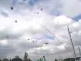
Finalement, le ciel se meuble bien, des légers au départ : beaucoup de rollers !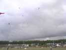
Et puis des plus gros, grands deltas, Condor...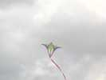
De jolis cerfs-volants que je ne connaissais pas comme cette "amande" où les courbes s'entrecroisent et se pénètrent...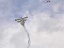
Le grand Annarlequin de Vierzon a réussi à prendre l'air, pourtant il fait son poids. Dans la journée, on verra aussi en l'air leur Flow-form géant...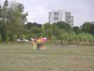
Claude s'intéresse aussi à un avion très coloré, qui ne volera pas tout de suite mais plus tard et je serai trop loin pour le photographier.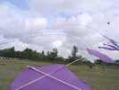
Les arches se multiplient, l'auteur a 2000 voilures à lancer mais manque de place, et pourtant !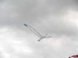
Moi, je ferai le 1er vol de mon nouveau cerf-volant, l'Albatros 2. Je voulais refaire la toile de l'ancien, mais je n'ai pas eu le courage de le détruire. Alors, j'en ai fait un autre, pas mal modifié... Il a assez bien volé, j'ai seulement noté une douzaine de modifications à faire, y a rien de plus instructif que les essais en vol...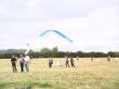
On verra aussi une "banderole" "voler".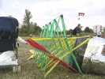
Posé à coté de la tête de son dragon, le cerf-volant en étoiles de Guillaume plaît beaucoup à Bébé !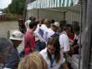
Mais midi est arrivé vite, vite, vite, il faut aller faire la queue en n'ayant pas oublié de prendre le ticket...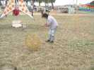
Côté Jardins du V... on se remue. Certains improvisent même avec les matériaux locaux, comme Mme Roberto avec cette sphère en osier...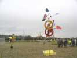
Michel Darnis et Louisette ont remonté leurs cacophones, un peu caco-aphones faute d'énergie motrice...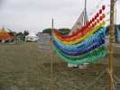
Ce voile coloré prend toute sa saveur quand on sait qu'il est constitué de bouchons de bouteilles de diverses couleurs "naturelles" !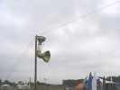
Didier a monté, outre des orgues et flûtes éoliennes, nombre de fils vibrants avec résonateurs...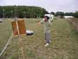
Il y a aussi un fil qui produit un très beau son, riche en harmonique et en modulations quand on le fait vibrer longitudinalement avec les doigts enduits de colophane...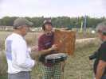
...ou bien en le frappant comme Patrick, ou encore en l'excitant avec un archet maison comme le fait Roberto !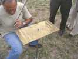
Toujours à l'archet, et malgré le petit vent qui balaie le sable, Joel arrive à obtenir des figures de plus en plus complexes !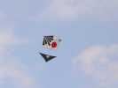
Les rollers, c'est leur jour ! Celui-ci est à Claude, je crois. Claude est d'ailleurs dans une forme olympique aujourd'hui, on ne peut plus le tenir !...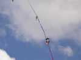
Tellement que... il vaudrait mieux contrôler un peu plus, ah, ces gamins !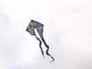
Je reviens sur mes déclarations "cerf-volant psychédélique". En fait, vu de face, on voit mieux, c'est normal. C'est une très belle interprétation d'une chimère à corps de dragon et buste nu de femme le tout issu d'un vitrail du Château d'Ecouen, du Château, hein, pas de la Collégiale !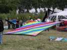
Les italiens sont venus en nombre. Ils ont réalisé des sortes de flocons très plats et très beaux, une merveille de couture. Accessoirement, ils volent, aussi, mais il faut un peu plus de vent...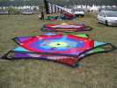
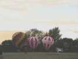
Mais le soir tombe, le vent avec, c'est l'heure où les mini-montgolfières vont se lâcher. Elles sont 4 dont une toute petite, mais avec le pilote assis sur son siège, s'il vous plaît...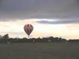
Elles sont télécommandées, et avec le vent faible, on peut les libérer sans qu'elles aillent trop loin... si on est prudent !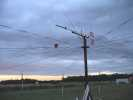
La plus grosse (à Michel ?) s'est même permis de monter assez haut en exploitant une accalmie...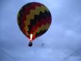
On peut aussi les tenir en laisse ce qui permet de les voir de près, toujours impressionnant dans la nuit, même à cette échelle !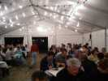
Puis c'est l'heure du dîner, servi à table sous la tente.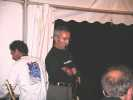
Après le dîner, surprise : de la musique, principalement par des cervolistes. D'abord, chant diphonique, où 2 voix sont émises simultanément (très prenant, avec notre ami)... en savoir plus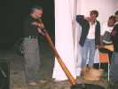
C'est aussi un pro du Didjeridoo, avec du rythme et des variations infinies !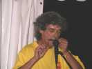
Dom nous régalera aussi d'un récital de guimbarde, d'abord sur des rythmes lents et profonds pour montrer que cet instrument n'est pas qu'un jouet. Il terminera quand même sur un morceau endiablé, pour montrer qu'il maîtrise...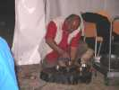
Bernard pratiquera, seul ou en accompagnement, les "bols tibétains", sons choqués ou frottements comme sur la photo qui résonnent longtemps en créant une atmosphère...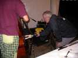
Puis l'orchestre se met en place, Patrick en profite pour faire de la contre-plongée sur Roberto à la contrebasse grâce à son appareil "vrillable" !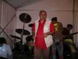
Pour l'installation de l'orchestre, bernard mène son monde à la baguette !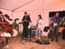
Finalement, l'orchestre est installé et joue. Sur les 5, il y a 3 cervolistes, pas mal...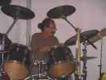
D'abord le batteur que vous aurez bien sûr reconnu : Guy Gosselin qui allie tous les talents, et il s'est bien défendu !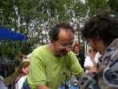
Ensuite, Roberto, un cervoliste italien à la contrebasse a été le meilleur...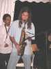
Et puis David, le fils de Didier Ferment au saxo a eu un peu de mal à plonger dans le groupe des musiciens pro ou quasi-pro, mais il s'est amélioré tout au long de la soirée...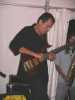
Puis une basse électrique (photo) et une gratte, je les connaissais pas, mais ils se sont donnés, fallait voir et entendre !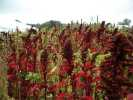
Le dimanche matin, réveil un peu difficile, et sous une pluie pas encourageante. Alors, après le somptueux petit-déjeuner, visite des jardins avec des plantes plus ou moins connues...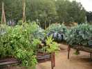
Les jardins sont divisés en petits espaces où on trouve des rivières, des fleurs, des légumes, ici poussant en surélévation...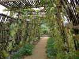
Les allées sont elles-mêmes des oeuvres d'art reprenant les thèmes des jardins : rames, plantes grimpantes...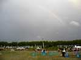
Mais l'arc-en-ciel est sous le vent donc 1) la pluie est passée, 2) le soleil est présent à nouveau !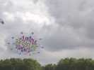
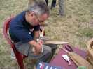
Il y a plusieurs ateliers de construction comme "L'arbre Voyageur" ou celui-ci pour cervolistes avertis qui permet de construire rien qu'avec des feuilles de bambou.